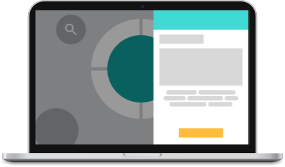

<!DOCTYPE html>
<html lang="en-us">
<head>
<meta http-equiv="X-UA-Compatible" content="IE=Edge">
<meta name="viewport" content="width=device-width, initial-scale=1">
<meta charset="UTF-8">
<title>Knode Case Study</title>

<!-- Google Fonts -->
<link href="https://fonts.googleapis.com/css?family=Lobster" rel="stylesheet">

<!-- CSS -->
<link rel="stylesheet" href="css/normalize.css">
<link rel="stylesheet" href="css/font-awesome.css">
<link rel="stylesheet" href="css/style_knode.css">

<!-- JQuery -->
<script src="js/jquery-3.2.1.min.js"></script>


</head>


<body>
<!-- Header -->
  <header>
    <nav class="container">
      <a name="top"></a>
      <div class="header">
        <ul id="headers" class="menu no-bullet" >
          <li><a data-page="home" href="index.html"><h5>Home</h5> </a></li>
          <li><a data-page="about" href="index.html#about"><h5>About</h5> </a></li>
          <li><a data-page="contact" href="index.html#contact"><h5>Contact</h5> </a></li>
        </ul>
      </div>
      <hr id="headerline"/>
    </nav>
  </header>

<main role="main">
  <section class="case-study">
        <li class="center-text">
          
        </li>
        <li class="center-text">
          <p>KNODE was created as part of a UX Hackathon event by myself, Alyssa Esteban, Anthony Virey, Ben Booker, and Boris Yu. The goal of the Hackathon was to design a product that redesigned the candidate experience. Ben Booker researched user flows while Anthony Virey researched market analysis. I handled research insights through previous articles and research done on the job market. Boris Yu designed our wireframes, while Alyssa Esteban was our project manager and overall UI designer.
          <br/>
          <br/>The event was hosted by JET and took place on 04.29.2017 at the JET Headquarters in Hoboken, NJ.
          <br/>
          <br/>More information on the Hackathon can be found <a href="https://goo.gl/iq19w2">here</a>.
          <br/>
          <br/>Judges at the UX Hackathon were Juan Sanchez (Director of UX, Jet.com), Travis Kessel (Head of Recruiting, Jet.com) and Sean Echevarria (Product and Research Manager, Jet.com).
          <br/>
          <br/>Team KNODE placed with special recognition in 4th place.</p>
        </li>
        <li class="center-text">
          <div class="designheading">
            <hr id="problemline1"/>
            <h2>The Problem</h2>
            <hr id="problemline2"/>
          </div>
          <p>Millennial job-hopping is a major problem within the industry,  costing the U.S. economy $30.5 billion annually.*</p>
          <h2>Research Methodologies</h2>
          <p>Article Research in Millennial Turnover and Job Satisfaction
          <br/>User Interviews with active job seekers,employed millennials, and a talent acquisition recruiter.
          <br/>Fireside chat with Kathryn Minshew, CEO the Muse</p>
          <h2>Market Analysis</h2>
        </li>
      <div class="market-analysis">
        <div>
        <li class="market-left">
          
        </li>
        <li class="market-left">
          
        </li>
        </div>
        <div>
        <li class="market-right">
          
        </li>
        <li class="market-right">
          
        </li>
        </div>
      </div>
      <h2>Research Insights</h2>
    <div class="research">
      <div>
      <li class="research-left">
          <p>Millennials are more inclined to stay at a companylong-term when they are actively engaged and feel theyhave an impact on the company.*
          <br/>
          <br/>Millennials want to contribute to the positive impact they believe business has on society, but in doing so, they wish to stay true to their personal values.</p>
      </li>
      </div>
      <li class="research-right">
        
      </li>
    </div>
      <li class="center-text">
          <p>82% of millennials believe their personal values are shared by the organizations they work for where they have intention to stay for at least another five years.*
          <br/>However, only 27% of millennials expect to stay in their current positions by 2020.
          <br/>
          <br/>64% of senior millennials indicate that personal values have the greatest influence on their decisions, while 49% of junior millennials say the same.
          <br/>The values that millennials associate best with are people treatment @ 26%, ethics @ 25% and customer focus @ 19%
          <br/>
          <br/>To read more click <a href=https://goo.gl/aMW6tY>here</a>.</p>
          <div class="designheading">
            <hr id="approachline1"/>
            <h2>The Approach</h2>
            <hr id="approachline2"/>
          </div>
      </li>
    <div class="approach">
      <li class="approach-left">
        
      </li>
      <li class="approach-center">
          <p>How might we invert the paradigm of the job search?</p>
      </li>
      <li class="approach-right">
        
      </li>
    </div>
      <li class="center-text">
          <h2>The Product</h2>
          <p>Knode provides the job seeker with an interactive experience to find companies that align with their personal values in order to build long-term employee engagement.
          <br/>
          <br/>Target User — Millennial at mid–level actively seeking the right company fit.</p>
          <h2>User Flow / Wireframes</h2>
      </li>
    <div class="wireframes">
      <div>
      <li class="left-third">
        
      </li>
      <li class="left-third">
          <h6>Step 1:
          <br/>
          <br/>Open up Knode webpage</h6>
      </li>
      <li class="left-third">
        
      </li>
      <li class="left-third">
          <h6>Step 3:
          <br/>
          <br/>Companies populate</h6>
      </li>
      <li class="left-third">
        
      </li>
      <li class="left-third">
          <h6>Step 4b:
          <br/>
          <br/>Search again or click another node to explore</h6>
      </li>
      </div>
      <div>
        <li class="right-third">
          
        </li>
        <li class="right-third">
            <h6>Step 2:
            <br/>
            <br/>Enter Search Term</h6>
        </li>
      <li class="right-third">
        
      </li>
      <li class="right-third">
          <h6>Step 4a:
          <br/>
          <br/>Browse company profile</h6>
      </li>
      <li class="right-third">
        
      </li>
      <li class="right-third">
          <h6>Step 5:
          <br/>
          <br/>Apply!</h6>
      </li>
      </div>
    </div>
      <li class="center-text">
        <div class="designheading">
          <hr id="designline1"/>
          <h2>Finished Design</h2>
          <hr id="designline2"/>
        </div>
      </li>
      <li class="center-text">
        
      </li>
      <li class="center-text">
        
      </li>
      <li class="center-text">
        
      </li>
      <li class="center-text">
        
      </li>
      <li class="center-text">
        
      </li>
      <li class="center-text">
        
      </li>
      <li class="center-text">
        
      </li>
      <li id="conclusion" class="center-text">
        <div class="designheading">
          <hr id="conclusionline1"/>
          <h2>Conclusion</h2>
          <hr id="conclusionline2"/>
        </div>
          <p>KNODE was a very interesting and enlightenting experience as a whole. I learned how to cooperate on a team, specifically as a researcher, while other members handled other aspects of the design process. Having this event be a Hackathon was also a very interesting learning experience, as a full scale project was not possible for some parts of the process.
          <br/>
          <br/>Some of the pros I took away from this Hackathon:
          <br/>
          <br/>Team Dynamic - everyone has a set part: researcher, UI, wireframing, etc.
          <br/>Time is collectively spent in a much more efficient manner than individually.
          <br/>Not only does the Hackathon push a team to be more creative, but it also teaches a team to effectively manage their time better.
          <br/>
          <br/>Some of the cons I took away from this Hackathon:
          <br/>
          <br/>Time limitations - as you can tell from my case study, we did not have enough time to have effective personal user research or any user testing. We simply ran out of time to do either.
          <br/>Team Dyanmic - while having all members of the team be equally self motivated and driven, that is unfortunately not the case in a lot of situations. It was challenging to keep people focused, especially given the relative newbness some of us were to the design process.
          <br/>
          <br/>Some things I would have changed had I had this as a full project:
          <br/>
          <br/>I definitely would have spent more time getting some personal user research in. While we made do with the research articles and user testing on millennial job market conducted in published papers, I would have liked to have gotten some personalized user surveys and responses filled out. I also would have loved to have gotten some user testing in, as one of the reasons why we placed 4th was because we had no user testing to back up our product.
          <br/>
          <br/>Overall, I really enjoyed this experience. I felt like I learned a lot about working on a UX team and how to efficiently manage my time, a skill that I carried into the rest of my Bloc program.</p>
      </li>
  </section>
</main>

<!-- Footer -->
<hr/>
<footer>
    <div class="footer-nav-block">
        <div class="footer-left"><a href="index.html"></a></div>
        <div class="footer-mid">
        <div class="back"><a href='#top' class="back">back to top</a></div>
        </div>
        <div class="footer-right"><ul class="social_icons">
          <li class="social"><a href="http://instagram.com/ackeepitcool"><i class="fa fa-instagram fa-2x" aria-hidden="true"></i></li>
          <li class="social"><a href="http://twitter.com/ackeepitcool"><i class="fa fa-twitter fa-2x" aria-hidden="true"></i></li>
          <li class="social"><a href="http://linkedin.com/agchen"><i class="fa fa-linkedin fa-2x" aria-hidden="true"></i></li>
          <li class="social"><a href="http://dribbble.com/ackeepitcool"><i class="fa fa-dribbble fa-2x" aria-hidden="true"></i></li>
        </ul>
        </div>
    </div>
</footer>
</body>
</html>
